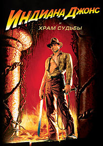

Жанр: Adventure
Год выпуска: 1984

Описание: Джонс оказывается втянут в ужасную историю, связанную с
древним культом, поклоняющимся богине смерти Кали. Инди, его напарник «Коротышка» и певица
кабаре Вилли Скотт (которую сыграла актриса Кейт Кэпшоу) оказываются в индийской деревне, жители
которой переживают горе — их детей утащили в шахты последователи древнего культа, живущие во
дворце. Кроме того, были похищены священные камни Шанкары.